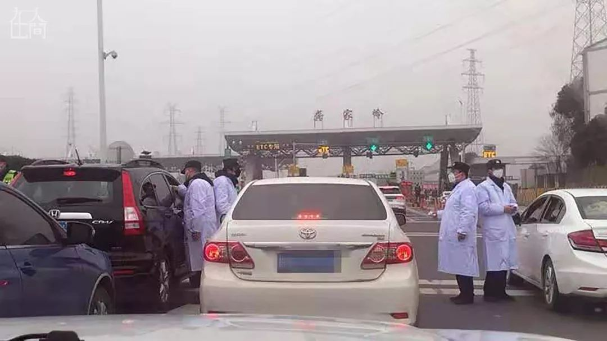
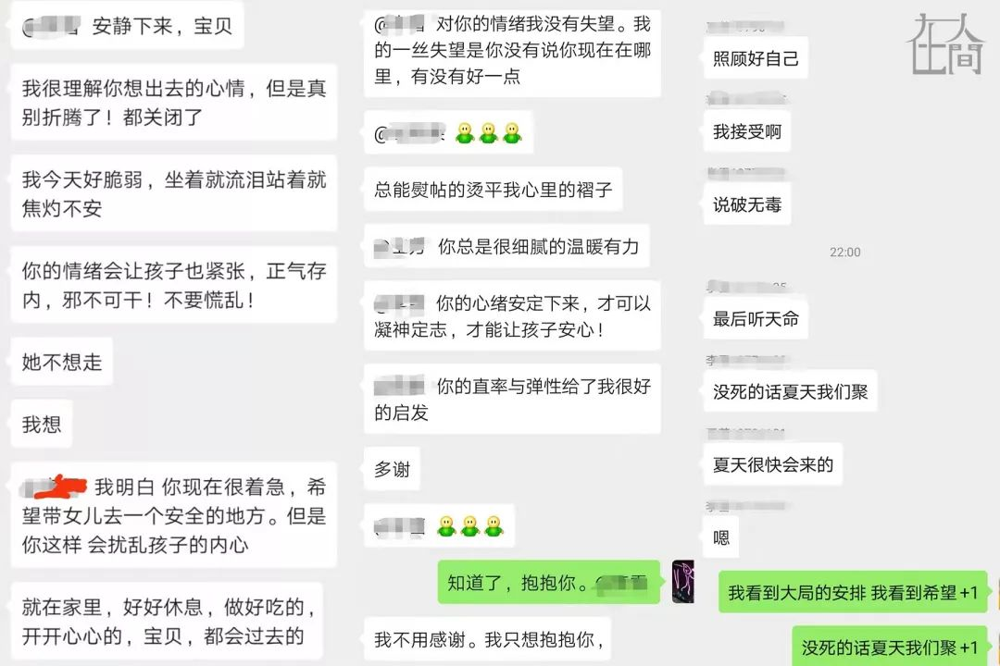
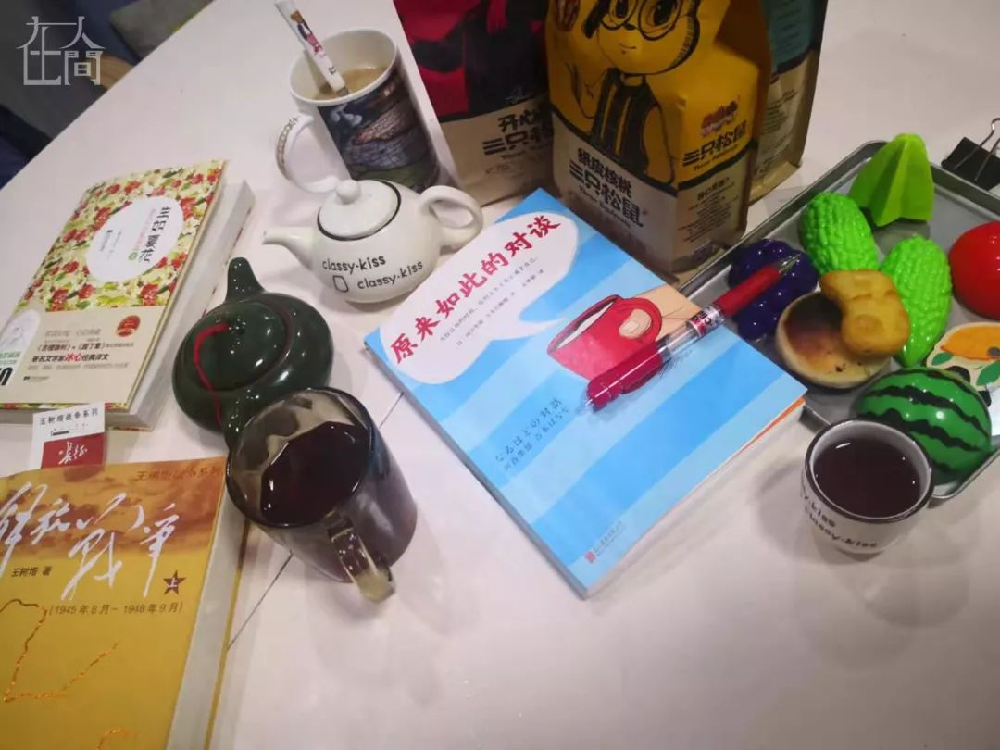
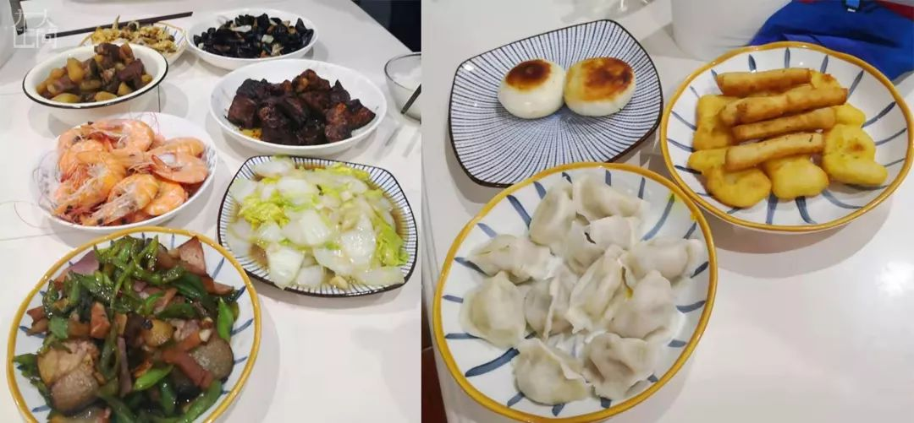
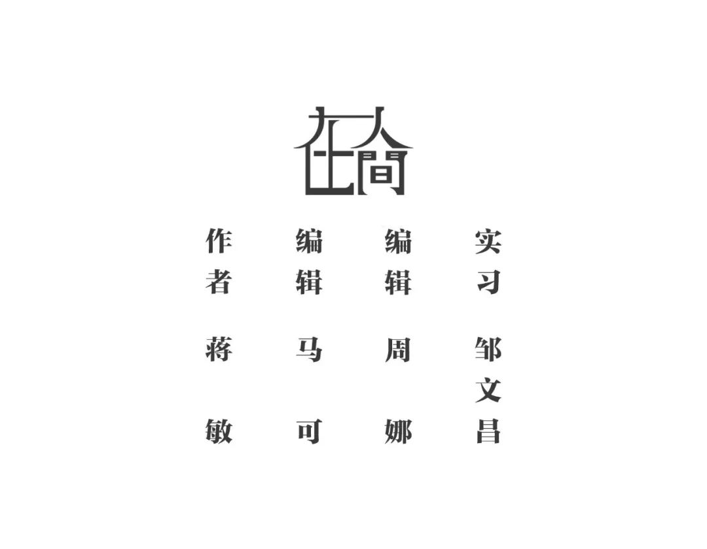

不能出门？在家拍照啊！这里正在征集…
原文链接 备份链接 今日立春 疫情形势严峻 不盲目歌颂 不滥抒情 要说真话 要做实事 我们致敬那些在前线与病毒抗争的英雄。作为摄影师，我们尤其致敬在前线用镜头记录这个事件的记者和摄影师们。但我们知道，这毕竟是一场特殊的战斗，并不是每个人 …

今天是武汉封城第13天，在城内留守的900万市民，除了为核酸检测、为床位奔波的人们，还有大多数人留在家中，除了采购生活物品和倒垃圾，连家门都不出。他们怎么度过封城的日子？本文作者的经历或许能代表一些普通武汉家庭的日常。

凤凰新闻客户端 凤凰网在人间工作室出品
今天，天气晴朗，阳光明媚，这是武汉自封城以来，第二个大好的晴天。我坐在阳台打字，两个孩子在一边玩耍。窗外，我们洗的床单，随着微风轻轻飘扬。
自武汉发生疫情以来，我内心五味杂陈，从最开始的漫不经心到今天的刻骨铭心，走了好长一段路，用长途跋涉来形容也不过分。
本文是我和我小家的一段经历，或许能代表另外一些普通武汉家庭的日常。

这一天是1月23号，腊月二十九。我们家有过一次两小时的“逃离”。你问我为何没早走？没有现实原因，全部是犹豫。此时的犹豫，我把它解读为潜意识没有上升到意识层面、但始终指导着你行动的那个感觉。
21号晚上，我终于和胖子（我老公）谈妥回老家事宜，收拾好行李。胖子看着手机说形势越来越严峻了。一直以来，家里外部事件归胖子管，这次也不例外，我把何时走的决定权交给了他。他有他的犹豫。几天前，他和一个被隔离（因家属感染）的同事一起开过会，虽然这位同事被证实未感染，但他还是有些担心，在家进行自我隔离。
22号下午，小区业主群传出一个视频，一辆救护车拖走了一个老人，医生全副武装。那一刻，我觉得：我们该走了！如果再不走，肯定就走不成了！
23号凌晨2点，封城的消息传出来。早上，我们赶紧打扫卫生。我想着：走得成，出行前打扫卫生符合我一贯的习惯；走不成，回来家还是干净的。我带着一种当逃兵的感觉做着这些准备工作，直到出发。
坐在车上，看着这座熟悉的城市，我在想：我真的要逃离了吗？胖子在强调：没有他的允许，不能随便开车窗。我就想：这病得有多严重？车窗都不能随便开，这座城市的空气都不能自由呼吸了？心中掠过一丝悲凉。

二七桥上车辆如常，为了平复自责，我问胖子：他们都是要出城的吗？他说那是当然。这样，我的自责似乎少了一些。然而，这种自责并没有持续多久。很快，到了出武汉的高速收费站。此处站满了警察，所有车一律调头回市区。那一刻，确实有失落，但更多的是踏实，把我从自责中解放出来。
回家后，大家各自睡了一觉。胖子开始进进出出，盘点物资，下楼去超市购物；晚上他一个人默默把我们的行李一件件拿出来各归各位。他的主战场在厨房，嘴里一直念叨今年过年太仓促了，没几个菜。可是我想，夫妻关系和睦、亲子关系融洽，天天都像在过年，不用计较有多少个菜。
一直以来，我对于人生中的种种经历始终心怀感激。封城第一天，从自责到失望到安定，我相信这会拓宽我的人生维度。

我们有一个学习小组，我们在一起学家庭治疗，也一起撒泼卖萌。封城那天，我的出走扰动了L雪，她平时是一个自信满满、光芒四射的人，但也有软肋——女儿。女儿因生病需要吃药，她很担心封城后，出行困难，无法买药。看到我走，她也想走。那一天，群里充满了不安、惶恐、躁动。L雪说：如果不死，我们夏天聚！L荣后来说：当时觉得又惊恐又悲壮，也不知道余生能否再见，但最恐惧的时候能跟大家在一起，又觉得没那么难过。而W芳，作为一名医生，表示坚决留守武汉，这帮我们抚平了那慌乱惶恐的最后一道褶子，成为我们的镇定剂。

城里机动车限行那天，L雪生日，我们各给自她发了一个小红包，她说等夏天再见时用这笔钱来请大家吃大餐。那天，她也很焦虑，限行可能影响到她给女儿买药。第二天，她告诉我们，她这种情况是可以出去买药的。她于是身披雨衣、戴双层口罩和手套出了门。
封城后，人们的生活由原来一个大的社会圈子直接变成了只有家庭成员存在的小圈子，很多平时不易觉察的意义重新呈现出来。
以前我总担心胖子不准时回家，现在完全不会了。他目前为止所有的出门只为两件事：购置物资；丢垃圾。且绝不在外逗留。这么想想，倒是节省了一笔电话费，少了很多对他晚回家的怨怼情绪。以前在家，要他做点事情还有点儿小忐忑，怕他累了烦了不愿意做，现在叫他做事完全心安理得。通过这次事件，我不会再给胖子扣上“永远处于马斯洛需求层次的最底层”这顶帽子。这一特殊时期，重新审视一下夫妻关系，你也许会发现多年以来不曾被觉察到的亮点。

封城后，时间有了新的意义。时间一下子变得非常充裕，有许多事情可以做：追英剧美剧；读书柜里的书；温习之前的一些咨询报告……时间充足，但计划的标准不一样了：以前是准确到几点钟做什么，现在变成了：起床后的2-3小时是学习时间，这个时间可能是早上10点，也可能是下午2点，这是一个准确又不准确的自由时间。
封城以来，我重新规范了两个孩子的日常。大儿子每天上午不管几点起床，第一件事一定是学习；午饭后负责洗碗；抽时间和弟弟玩游戏。
我告诉他：其实我们不要刻意把某一段时间看得那么特殊。我们原来做什么，现在还是可以做什么，比如学习，比如自律……就算我们身处如此境地，还远未到世界末日的那一天。认真地学习和生活，是我们每一位普通人的职责所在。

从“封城”第二天开始，我们家启动了已经停滞两年的读书会活动。几乎从来不看书的爸爸在读书会上表现最好，记笔记最认真，大儿子对于读书最有感悟，而我这个组织者表现最差。最后他们都感觉上当了，原来你是打着开读书会的名义叫我们读书！
此外，家里每个人开始运动起来。已经冬眠许久的跑步机也派上了用场，每天每人都跑上半小时。我们在家各种追赶，敌我双方不停变换，有时我们是奥特曼，有时只是一个没有名字的坏蛋，一切由弟弟说了算。
封城之后，我们比以前更讲究卫生了。每天大家都要洗手很多次。小儿子之前会有不洗脸的情况，现在是绝对不存在了。他看到我们偶尔咳嗽，就会对其他两个人讲：离Ta远一点，Ta在咳嗽！你看，这个3岁小朋友的认知就被这场疫情更新了。
小儿子在更小的时候，把咳嗽称为紫色病，这是他自己发明的专有名称。今天为止，我们已经近10天没有出门，有一次他收完了玩具，问我：我们现在可以出去玩了是吗？
我：你是说出门吗？
他：嗯。
我：我们现在还不能出门
他歪着头很认真看我：为什么？
我：因为现在很多武汉的人都生病了，我们出去会很危险，会被传染。
他：他们生的什么病？是紫色病吗？
我：嗯，是紫色病。
他：我们在家里就不会生紫色病！
我：嗯，是的，我们待在家不会生紫色病。
他：武汉的人生病了，那让医生来救我们武汉。
我：来了，来了好多好多的医生来救武汉。
这让我想起23号逃离武汉的那天，走出房门时我让他戴口罩，他死活不戴，把口罩带子都弄断了。我不知道如何说服他，只是不顾他的哭喊，一手抱着他，一手紧紧地在他脸上按着断掉的那边。我想，当时大人的慌乱已经传染给了小朋友，他才会对戴口罩如此抗拒。
就是这个3岁的小朋友，在我们武汉人打开窗户，站在阳台高呼“武汉加油”的时候，他一遍遍地挥着他的小拳头：武汉加油，武汉加油！他稚嫩的童音在黑寂的武汉冬夜下，显得如此铿锵有力，而我，只喊出了第一句“武汉加油”就再也泣不成声。我泪流满面地看着我年幼的孩子：儿子啊，你可知道，我们正在经历着什么！作为武汉的一份子，妈妈为你骄傲，你帮妈妈，也帮我们家，更是帮我们所有武汉人，喊出了我们心中最痛最重的心声——武汉加油！

封城至今，我们家的情绪保持在乐观、自如、平静这个基调上，但也始终隐藏着一些无奈和心酸，还有不能出门的压抑。
过年那天，胖子做了好几个菜，看着两个孩子吃得津津有味的样子，想想不知道还要有多久才能带他们出去玩儿，既欣慰又心酸。这天，我们比平时多吃了一顿米饭。胖子一再提醒我，不要把菜发朋友圈，菜太少了，丢人。

这个晚餐，如果正常情况下应该叫年夜饭。胖子还搞了点儿小酒，小儿子在睡觉，大儿子在看电视，就剩下我们俩喝着小酒聊着天，时光好像一下回到了没毕业刚结婚的那段时间。那时的我们经常弄几个小菜，喝点儿小酒，在那栋博士楼我们小小的家里。恍然间，十几年过去了，身边多了两个孩子。这些年，架不知道吵了多少次，婚也不知道在心里离了多少次。
对于我们的小家庭，我们都有功，也曾经都有过。但都不重要了，2020年，我们仍然紧紧依靠在一起。
“封城”后的第三天晚上，朋友圈陆续出来一个视频。一个武汉人用武汉话在阳台朝对面喊话：“对面的，把窗户打开吵个架，要疯了，有没得人哦。”我边看边笑边哭，看了一次又一次，在那一瞬间，我知道，我第一次爱上武汉，这个我生活了二十多年的城市。如果你不是武汉人，如果你没被“封城”，你或许不能像我一样，如此理解那番对喊中所饱含的武汉人特有的坚强、乐观、感动和心酸。
那番对喊里，我感受到的是寂寞又不是寂寞，是心酸，是幸福，是坚强，五味杂陈。我觉得，我生活的这个城市好有爱，这个城市有希望。一位朋友所说：通过这次疫情，相信我们会更爱这座城市，不管是留下的还是逃离的，这是集体潜意识。
这几天，冰箱冰柜零食柜看着就空了，小儿子不再愿意一天只吃两顿饭，时常往零食柜那边跑。胖子这个厨师也越来越不好当了，每天中午只有一个菜，晚上是一顿面条。他时时想出去采买。那天好不容易在网上抢到一些菜，胖子下楼去自取，同时为他心爱的儿子买点零食。

我们越来越不敢出门，社区通报了小区的疑似和确诊感染人数，是重灾区。悲观时我会觉得，危险似乎离我们越来越近了，近得我不敢开阳台的窗户，不敢在阳台晾晒衣服。楼上和楼下的距离，似乎更远了。
封城的经历或许可理解为一种患难的经历。随着患难的开始，新的一番人际互动情景同时展开。微信里很多人发来问候，大部分是出于真诚的关心，也不排除有人只是猎奇。我努力去感受那些真诚的味道。
现在有许多心理机构在做危机干预，一个朋友对我说：这是一个机会。我无法回应“机会”两字。此情此景，我们都很难hold住自己的焦虑，何况还要去帮助别人？我不太确定是否有能力去支持那些需要帮助的市民。
此时，我想到“敬畏”一词。我们要学会去敬畏他人的想法和态度，而不是直接给予评价。面对疫情，不管是医护人员还是患者、普通市民，每个人的心理压力各有不同，如何有温度有效地帮助到他们，是我所理解的在这场疫情中的敬畏。
这场疫情中的敬畏还包括：能不出门就不出门，万一要出门也要戴口罩，这是对生命的敬畏；不听信各种谣言更不传播谣言，这是对事实的敬畏。以上，就是我作为一名普通武汉市民、一名心理咨询师，在封城这段时间以来的真实经历，有平淡和从容，也有一些慌乱和恐惧。
以上，就是我作为一名普通武汉市民、一名心理咨询师，在封城这段时间以来的真实经历，有平淡和从容，也有一些慌乱和恐惧。



新型肺炎疫情牵动人心，
《在人间》现面向全国网友征稿：
(一) 疫区影像日记
如果你身处疫区
请你用照片（视频）和文字记录
你所听闻和见到的一切
照片不少于3张
文字不少于300字
投稿方式：微信联系人间君（zairenjianliving）
（二）抗击疫情真实故事
无论你是一线医护人员、志愿者、
确诊或疑似患者及家属、已治愈出院人士等等，
如果希望讲述疫情相关经历，
请微信联系人间君（zairenjianliving）

原文链接 备份链接 今日立春 疫情形势严峻 不盲目歌颂 不滥抒情 要说真话 要做实事 我们致敬那些在前线与病毒抗争的英雄。作为摄影师，我们尤其致敬在前线用镜头记录这个事件的记者和摄影师们。但我们知道，这毕竟是一场特殊的战斗，并不是每个人 …
原文链接 备份链接 这里是大学生的新媒体实验室 ∆ 轮到你了：这是武汉长江日报摄影记者陈卓参与武汉疫情报道的第16天，调岗一年后他被临时抽调参与一线报道。武汉封城前一天，他安顿好家中老小，封城当天和妻子一起返回武汉，开始过这个充满未知与风 …
原文链接 备份链接 1⁄7 *不为这座城市做点什么，最后，可能这座城市就完了……* 2020年1月30日 @雷锋小杨 坐标：武汉 大家就叫我雷锋小杨吧，我也不想留名。 我是武汉人，做酒店管理工作。我们的酒店在远城区，现在还在营 …
原文链接 备份链接 除夕前夜，因疫情蔓延，武汉宣布封城，机场、火车站、市内公共交通停闭，江城困围。封城以来，许多武汉人都承受着分离的苦楚，担心年迈独居的父母买不到菜，惋惜爱人最需要的时却不能陪在身边，常年在外工作的父亲错过仅有的看望孩子的 …
原文链接 备份链接 封城已过去一周，在这个谈武汉人、湖北人色变的时候，我们想要好好看一看他们。今天我们挑选的几篇读者来稿，围绕着湖北的武汉和黄冈，讲述他们在旋涡和风暴中心的日子。他们有些住在城市，有些住在乡村和小镇。环境的不同给了他们不 …